Vorbereitungen für die Netzerksimulationen und Übungen
Die Übungen für den Netzwerk-Kurs werden über ein GitHub-Repository zur Verfügung gestellt. Mit Hilfe von virtualisierten Cisco IOS Images, welche in Docker Containern ausgeführt werden, erfolgt die Simulation von Netzwerkgeräten (Router und Switches). Als Simulationsumgebung dient die Open Source Software Containerlab von Nokia, welche die Container orchestriert. Der Aufbau eines simulierten Netzwerkes wird in einer sogenannten Topology-Datei in YAML-Syntax beschrieben, welche Containerlab beim Start eines Labs einliest und das Labor entsprechend einrichtet und konfiguriert.
Die Laborübungen ie Netzwerk-Simulationen laufen in sog. Dev Containern auf GitHub Codespaces. GitHub Codespaces sind virtuelle Maschinen, die auf GitHub gehostet werden und angepasst an die benötigte Systemumgebung in einem GitHub Repository angelegt werden können. Ein kostenloser GitHub Account enthält derzeit (Juni 2025) monatlich 60 CPU-Stunden für die Nutzung von Codespace.
Um dies zu ermöglichen, benötigt jeder Kursteilnehmer einen eigenen GitHub-Account und eine Kopie (Fork) des entsprechenden GitHub-Repositories mit den Netzwerkübungen.
GitHub Sign-up
Info
Bereits bestehende GitHub-Accounts der Teilnehmer können ebenfalls genutzt werden. In diesem Fall weiter im Abschnitt GitHub Sign-in.
Ein GitHub Account wird wie folgt angelegt:
GitHub-Startseite in Webbrowser öffnen
GitHub-Startseite in Webbrowser öffnen und Sign-up Button auswählen:
Screenshot: GitHub Startseite
{kind=link}
Screenshot: Sign-up Dialog (leere Eingabefelder
{kind=link}
Benutzername und Passwort anlegen
- E-Mail Adresse eintragen
- Passwort eintragen und merken 🙂
- Gewünschten Usernamen eingeben (GitHub prüft Verfügbarkeit, Usernamen ggf. anpassen)
- Country/Region Germany auswählen
- Button Continue auswählen
{kind=link}
GitHub Account verifizieren
Der neue GitHub Account wird nun verifziert (hier am Beispiel Bilderrätsel dargestellt):
- Button Bilderrätsel auswählen
- Im rechten Bild angezeigte Grafik über rechts/links-Pfeile solange ändern, bis sie den im Text dargestellten Vorgaben entspricht
- Auswahl über den Button Absenden bestätigen
- Bestätigungsnachricht wird angezeigt, wenn die Auswahl korrekt war, ansonsten wird ein neues Bilderrätsel angezeigt
Screenshot: Account Verification 1
{kind=link}
Screenshot: Account Verification 2
{kind=link}
Screenshot: Erfolgreiche Account Verification 1
{kind=link}
E-Mail Adresse bestätigen
Nach den Account Verifikation wird die E-Mail Adresse überprüft:
- Posteingang auf Nachricht von GitHub mit Bestätigungscode prüfen
- Bestätigungscode in den Feldern unter Enter Code eintragen
- Eingabe über den Button Continue abschließen (dadurch werden auch die GitHub Terms of Service angenommen)
- Es folgt die Anzeige der GitHub Sign-in Seite
Screenshot: E-Mail Verification (Code-Eingabe)
{kind=link}
Screenshot: Leerer Anmeldialog nach erfolgreicher Account-Erstellung
{kind=link}
GitHub Sign-in
Anmelden mit den Benutzerdaten des neu angelegten oder eines bereits bestehenden GitHub-Profils:
Screenshot: Beispiel Anmeldedialog mit Username und Passwort
{kind=link}
Screenshot: GitHub Startbildschirm nach erfolgreicher Anmeldung mit neuem Account
{kind=link}
Forken des GitHub-Repositories für die Netzwerkübungen
Die Übungen werden über das GitHub Repository clab-lankurs des GitHub Users tjbalzer zur Verfügung gestellt. GitHub Codespaces werden einem GitHub-Repository zugeordnet und können nur vom Eigentümer des Repositories ausgeführt werden, wenn dieser mit seiner GitHub-Userid angemeldet ist. Deshalb muss das clab-lankurs GitHub-Repository von der GitHub-Seite des GitHub-Nutzers tjbalzer in das jeweilige GitHub-Konto jedes Kursteilnehmers kopiert (geforkt) werden.
Dieser Fork des Original GitHub-Repositories wird wie folgt erstellt:
- Öffnen der GitHub-Webseite des clab-lankurs Repositories: https://github.com/tjbalzer/clab-lankurs
- Button Fork auswählen, um das clab-lankurs Repository als eigenes Repository in die GitHub-Umgebung des Nutzers zu kopieren
- Fork durch Bestätigung der Eingabemaske Create a new fork über den Button Create fork erstellen
Screenshot: Fork anlegen
{kind=link}
Screenshot: Create Fork Dialog
{kind=link}
Screenshot: Forking clab-lankurs Repository
{kind=link}
Screenshot: Forked Repository
{kind=link}
Dev Container in GitHub Codespaces erstellen und starten
Die Netzwerk Labs sollen in einer virtuellen Maschine (VM) auf GitHub laufen. Die VM wird als Dev Container (auf GitHub auch Codespace genannt) definiert und erstellt. Das vereinfacht die zentrale Verwaltung, Aktualisierung und Verteilung der Simulationsumgebung und auf dem lokalen Rechner müssen - mit Ausnahme von Wireshark - keine Installationen vorgenommen werden. Der Dev Container ist im geforkten Repository in der Datei .devcontainer/devocontainer.json definiert und basiert auf einem Containerlab Docker Container der SRL Labs:
{
"image": "ghcr.io/srl-labs/containerlab/devcontainer-dind-slim:0.68.0", // (1)
"hostRequirements": {
"cpus": 2, // (2)
"memory": "8gb", // (3)
"storage": "32gb" // (4)
}
}
- Definiert, welche Version des Containerlab Docker Containers verwendet werden soll
- Definiert die Anzahl der gewünschetn CPU Cores für die VM
- Definiert die Größe des RAM Speichers für die VM
- Definiert die Größe des Dateispeichers für die VM
Die Existenz der Datei .devcontainer/devcontainer.json im clab-lankurs Repository wird von GitHub automatisch erkannt und wir können den Dev Container (Codespace) wie folgt erstellen:
- Auf der Hauptseite des geklonten Repositories clab-lankurs den Button <> Code auswählen
- Daraufin wird ein Dialog mit den Reitern Local und Codespaces angezeigt
- Auswahl des Reiters Codespaces und Erstellung des Dev Containers über den Button Create codespace on main
- Die Erstellung des Codespaces dauert in der Regel 5-10 Minuten
- Über den Informationsdialog
Setting up remote connectionunten rechts kann durch klicken aufBuilding codespace...bei Bedarf das Log für den Aufbau im BereichTERMINALangezeigt und verfolgt werden - Die Erstellung und der Start des Codepaces ist abgeschlossen, wenn unten links der Verbindungsstatus
>< Codespaces: <zufälliger Name des Codespaces>angezeigt, im Hauptfenster die Containerlab Willkommensnachricht erscheint und das Containerlab Symbol am linken Rand in der vertikalen Bedienleiste eingeblendet wird - Codespace läuft und die Laborumgebung kann genutzt werden
Warning
Als Default Idle Timeout für GitHub Codespaces sind 30 Minuten vorkonfiguriert. Nutzt man einen gestarteten Codespace für 30 Minuten nicht, wird der Codespace automatisch gestoppt.
Warning
Als Default Retention Time für GitHub Codespaces sind 30 Tage vorkonfiguriert. Codespaces werden maximal 30 Tage nach der letzten Nutzung gelöscht.
Info
Die Codepace-Einstellungen für seinen GitHub-Account erreicht man unter dem folgenden Link, wenn man bereits mit seinem Nutzernamen auf GitHub angemeldet ist: https://github.com/settings/codespaces
Screenshot: Codespace erstellen
{kind=link}
Screenshot: Fortschritt Codespace-Erstellung 1
{kind=link}
Screenshot: Fortschritt Codespace-Erstellung 2
{kind=link}
Screenshot: Fortschritt Codespace-Erstellung 3
{kind=link}
Screenshot: Codepace erstellt
{kind=link}
Screenshot: Hauptansicht Containerlab Plugin
{kind=link}
Codespace Stoppen
Installation Wireshark & Containershark Extcap Plugin for Wireshark (Smart Client)
Soll statt eines Schulungs-Notebooks der persönliche EnBW Smart Client genutzt werden, muss zusätzliche Software auf dem Smart Client installiert werden. Hierbei handelt es sich um den Network Protocol Analyzer Wireshark und ein Capture Plugin zu Unterstützung von Packet Captures über Edgeshark. Edgeshark ermöglicht es, mit Wireshark den Netzwerkverkehr zwischen Docker Containern aufzuzeichnen, die auf dem lokalen Rechner oder entfernten Systemen ausgeführt werden.
Info
Voraussetzung: Der Schulungsteilnehmer muss über Adminrechte auf dem Smart Client verfügen.
Übersicht über den Ablauf der Installation:
- Wireshark Installer x64 herunterladen
- Installationsdatei mit Adminrechten ausführen (Installation von Wireshark startet)
- Containershark Extcap Plugin for Wireshark herunterladen
- ZIP-Datei
cshargextcap_0.10.7_windows_amd64.zipin ein Verzeichnis entpacken - Die Datei
cshargextcap-amd64-installer.exeim cshargextcap-Verzeichnis kopieren und in das Verzeichnis C:\Temp einfügen - Die Datei
C:\Temp\cshargextcap-amd64-installer.exemit Adminrechten ausführen (Installation von cshargextcap startet) - Datei mit Registry Keys aus dem clab-lankurs GitHub Repository herunterladen, ZIP-Datei öffnen und Datei
cshargextcap.regper Doppelklick mit der Maus in die Windows Registry importieren
Diese Schritte sind im Folgenden mit Screenshots der Details dargestellt:
Installation Wireshark
- Wireshark Installer x64 herunterladen
- Installationsdatei mit Adminrechten ausführen (Installation von Wireshark startet)
Screenshots: Wireshark Installation
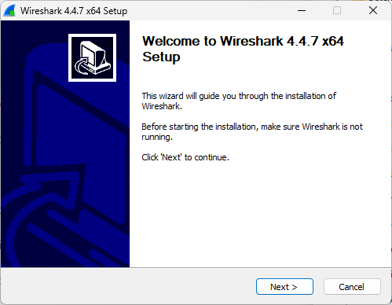 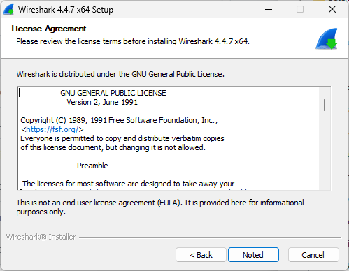 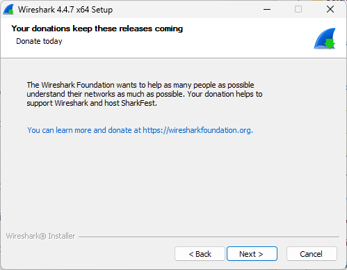 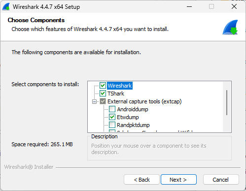 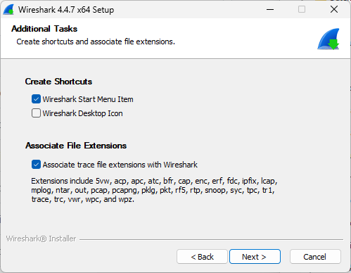 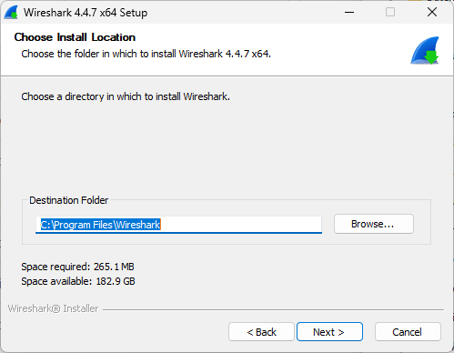 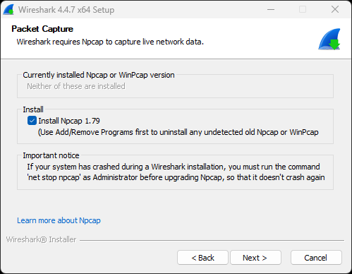 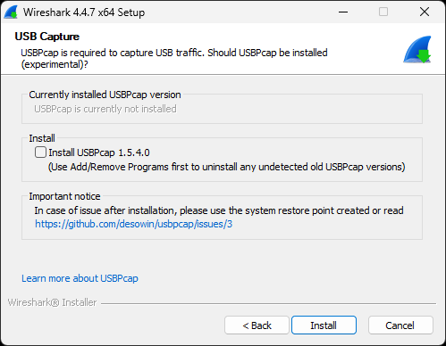 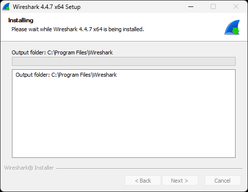 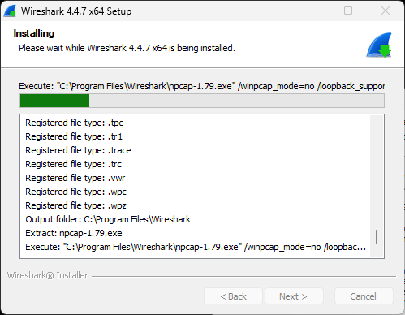 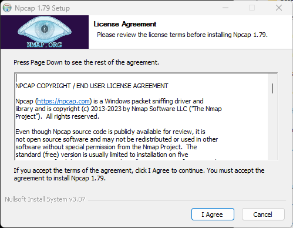 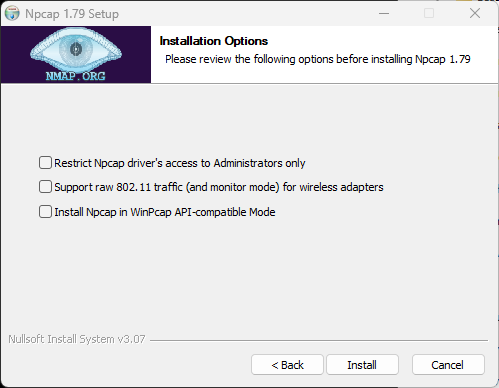 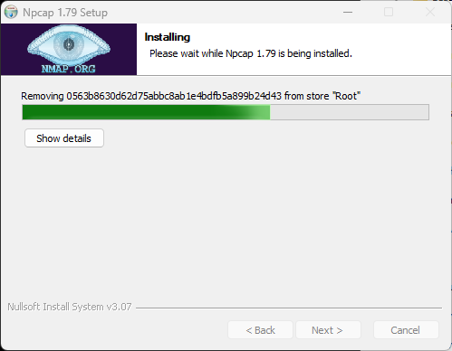 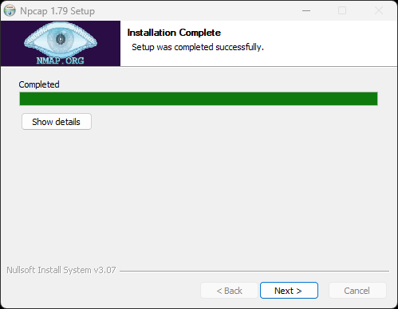 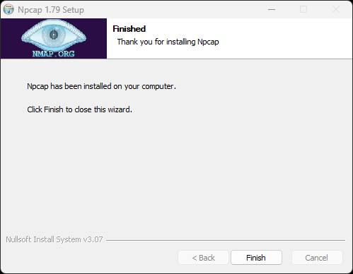 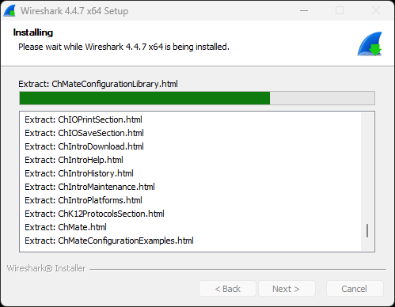 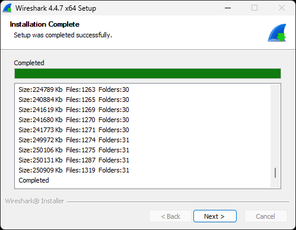 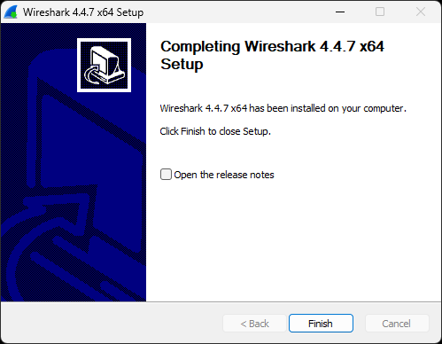
{kind=link}
{kind=link}
{kind=link}
{kind=link}
{kind=link}
{kind=link}
{kind=link}
{kind=link}
{kind=link}
{kind=link}
{kind=link}
{kind=link}
{kind=link}
{kind=link}
{kind=link}
{kind=link}
{kind=link}
{kind=link}
Installation Containershark Extcap Plugins for Wireshark
- Containershark Extcap Plugin for Wireshark herunterladen
- ZIP-Datei
cshargextcap_0.10.7_windows_amd64.zipin ein Verzeichnis entpacken - Die im ZIP-Archiv enthaltene Datei
cshargextcap-amd64-installer.exeim Zielverzeichniscshargextcap_0.10.7_windows_amd64kopieren und in das VerzeichnisC:\Tempeinfügen - Die Datei
C:\Temp\cshargextcap-amd64-installer.exemit Adminrechten ausführen (Installation von cshargextcap startet)
{kind=link}
{kind=link}
{kind=link}
{kind=link}
{kind=link}
{kind=link}
{kind=link}
{kind=link}
{kind=link}
Import der Registry Keys für Containershark Extcap Plugin for Wireshark
Info
Während der Installation des Containershark Extcap Plugins for Wireshark werden wichtige Keys für die Funktion des Wireshark Plugins in die Registry eingetragen. Da das Setup-Programm die Registry Keys in die Registry Sektion HKEY_CURRENT_USER einträgt und die Installation mit Adminrechten erfolgt, werden diese Einträge nicht im korrekten Userkontext vorgenommen. Daher ist es wichtig, die Registry Keys nach Abschluss der Installation nochmals zu importieren.
- Datei mit Registry Keys aus dem clab-lankurs GitHub Repository über den Button 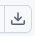 herunterladen
- Heruntergeladene ZIP-Datei
cshargextcap.zipüber Doppelklick öffnen und enthaltene Dateicshargextcap.regper Doppelklick in die Windows Registry importieren
{kind=link}
{kind=link}
{kind=link}
{kind=link}
{kind=link}
{kind=link}
{kind=link}